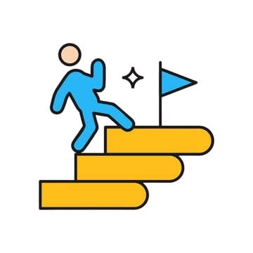

Segurança e Retorno!
Entenda o que é a tão falada renda-fixa e descubra a melhor forma de investir com renda fixa. Aprenda o por que ela é tão segura
e previsível.
Invista com segurança, com chances de perca muito baixas e retorno mensal!

Introdução
O que é renda fixa?
A renda fixa é uma modalidade de investimento em que você já sabe, no momento da aplicação ou no mínimo nas condições contratadas, como será a forma de retorno do seu dinheiro. Em outras palavras, você "empresta" dinheiro para o governo, bancos ou empresas, e recebe em troca uma remuneração definida ou previsível com o passar do tempo.
Ela é conhecida por oferecer mais segurança e estabilidade, sendo muito recomendada para quem está começando a investir ou busca preservar o patrimônio sem se expor a grandes riscos. Diferente da renda variável, onde os ganhos podem oscilar diariamente, na renda fixa é possível ter uma visão mais clara do resultado esperado ao final do período.
Se você quer começar a investir com mais tranquilidade e controle, a renda fixa pode ser um ótimo primeiro passo.